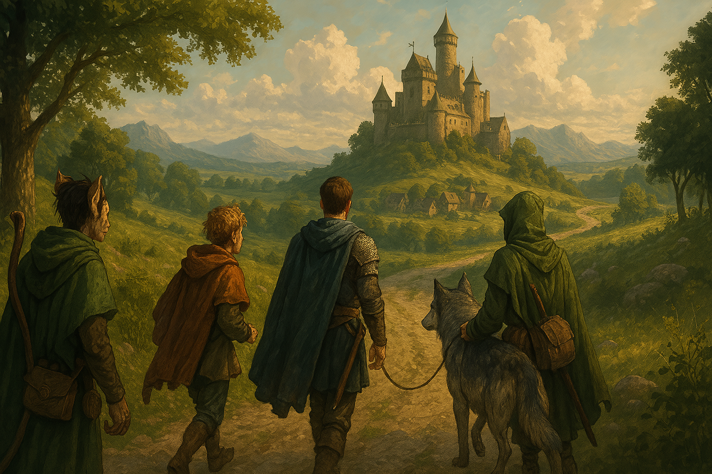

Chapter 3: Clone of...... Us?
Lurking Dangers

Lurking Dangers
15048.12.05
一早，Tweeter 就醒了。看見依偎在自己身上的 Lott，他十分好奇，以學者的角度觀察並記錄。他想起昨日 Lott 提到自己擁有魅魔的血統，便嘗試去思考，他的種種行為，是否是因為他的血統導致的？
一段時間後，冒險者們都甦醒了，紛紛下樓吃早餐。Marcus 和 Marianne 似乎都不在樓下。大家邊吃邊討論著接下來的計畫，他們預計先循著之前往瑟巴諾的路，一路追查，尋找泥人可能的蹤跡。
吃飽後，華生前往二樓拜訪 Marcus，Lott 和 Tweeter 則聊著 Lott 小時候被拋棄的事，Tweeter 如心理治療師般的開導，讓 Lott 心裡暖了許多。
不久後，Tweeter 暫時離開，Lott 便拿出了一些木頭以及工具，開始雕刻他的小玩偶。Mango 見狀也十分有興趣，和 Lott 借了工具和材料來試試。Lott 發現了 Mango 對此似乎十分有天賦。最終，Mango 雕出了一個小盒子，裝好他放在頭上的金羽毛，而盒子上似乎有個印記，以 Mango 的說法，是宇宙神的符號。
華生和 Marcus 詢問了關於昨晚提到線人的事，Marcus 表示他已經聯繫好了他的線人，最早明天晚上會到麥克嵩。他提及這名線人是名妖精，身穿全綠，身邊還有隻有異色瞳的狼，如果在麥克嵩看到他，可以主動去和他搭話。
在華生離開辦公室前，Marcus 喚住了他，表示有重要的事情想和他討論。這時，Marcus 拿出了一些異色的糖果，裝到一個盤子內，供華生享用。華生沒有多想，拿了一顆，接著他發現自己似乎吃到了吐真劑。Marcus 詢問了他關於沃瓦倫的惡魔、他的夥伴背景，以及這些夥伴的宗教信仰相關的問題，同時也詢問了他對於蜘蛛神教、月神教，和拉索斯教的想法。在得到了華生的答覆後，他表示很不好意思，需要用這種手段，得到他想知道的資訊。最為致歉，他把剩下在盤子上的糖果包裝起來，送給華生，並教他分辨是否為吐真劑的作法：這些糖果中，會反光的是真的糖果，不會反光的則是吐真劑。
當華生和 Tweeter 回來時，發現 Lott 不見了。Mango 表示自己剛剛很認真在雕刻，也沒注意到他消失。這時，一樓的後沒被推開，Lott 拿著兩袋食物走了進來。他邀請夥伴們享用他剛剛去找了僕人，在餐廳自己做的餅乾。餅乾倒了出來，看起來讓人食不下嚥—原料的昆蟲形狀太過完整，讓人很不放心。但是吃起來，卻是蠻好吃的。Lott 將其中一袋送給還在辦公室的 Marcus 後，大家便準備出發。
循著對這個城市的印象，大家出了城門，往瑟巴諾移動。Tweeter 沿路詢問路人是否有看到和他們長得很像的人，或是泥巴做的人，但他完全沒有得到答案。隨著瑟巴諾越來越近，路上已經沒有他們以外的人了，但似乎毫無泥人的蹤跡。Lott 決定爬到樹上偵查，發現了遠處似乎有幾座可疑的小土堆。
Tweeter 趕緊前往小土堆去，看起來總共有四個隆起。他拿起手杖用力戳了幾下，突然感到十分不舒服。抽起手杖，他看見自己的頭被插在手帳上，而且正在高聲尖叫。然而，這景象只有他自己看到而已。華生接過手杖，在其他幾個土堆上戳，卻發現僅有一個土隊底下似乎有東西。那東西，是他的頭被插在手帳上，也是高聲尖叫的狀態。對於眼前的怪象，兩人很是疑惑。同時，Lott 發現麥克嵩的方向似乎有人接近，趕緊向華生和 Tweeter 發出警告。
從樹林旁走來的是兩名中年人，看起來像是一對夫妻，走在前頭的男子背著厚重的背包，女子則拉著一台拖車，上面似乎疊了兩個大木箱，並用布覆蓋著。隱身的 Lott 悄悄地靠近充滿未知的木箱，順手從中偷了一點錢。
當兩人經過轉角時，Tweeter 和華生早已準備好，裝作沒事的和兩人搭話。這兩人自稱是來自麥克嵩，被當地的拉索斯主教吩咐帶著未知的行囊，要將這兩個木箱以及男子的背包帶到前方的城鎮，但他們一來不清楚自己攜帶的物品是什麼，也不知道前方到底是哪座城鎮。眼看兩人似乎沒有惡意，且自己也不清楚任務的細節，Tweeter 和華生變聯手，以威嚇與說服的方法，讓他們自行拿出貨物。不看還好，他們這才發現背包內裝的是前任國王巴納沃二世的皇冠和玉璽。而木箱內的貨物更讓他們詫異。上層的木箱裝了不少錢幣，但下層的木箱，裝的卻是巴納沃二世的屍體。夫妻兩人滿臉惶恐，他們非常擔心會因為自己的行為而被判為叛國罪。
剎那間，夫妻兩人的額頭中箭，瞬間倒下。Tweeter 和華生趕緊掏出武器準備應戰，躲在遠處的 Lott 也準備好偷襲了。兩名刺客在樹上舉著弓箭，同時快速地穿梭。然而在冒險者的合作與 Lott 的偷襲下，一名刺客瞬間死去，另一名則昏去了。
他們仔細搜索刺客身上的物品，推斷他們是由現任國王的母后 Marian 派來的。Lott 也發現這兩名刺客用的箭矢上塗有毒液，因此從他們身上努力翻找出是否還有留存的毒藥可使用。
三名冒險者身邊突然多了五具屍體，此時該往何處走都不太對。經過討論後，決議讓華生和 Tweeter 將國王以外的屍體都把頭砍下，好讓華生後續可與他們溝通，並帶往瑟巴諾作為臨時藏身處；Lott 則在 Tweeter 的夸塞魔陪伴下先回麥克嵩去通知 Marcus，並將 Marcus 與線人一同帶到瑟巴諾，大家會合後再一起出發前往洛森王國。
快速朝著麥克嵩前進，Lott 回到麥克嵩時已近傍晚。他在路上看見了與 Marcus 描述的線人十分相似的人：一名身穿綠色的妖精，身旁跟著一隻大狼，Lott 便與他攀談，得知他的名字叫 Ra’Leer，他的狼叫 Gary。Lott 帶著 Ra’Leer 和 Gary 回到了 Marcus 宅邸先行休息，同時等著 Marcus 和 Marianne 回來。
Lott 小心走上了二樓，發現伊醒著，正在看書，他便小心翼翼的靠近。伊看見他，淺淺的微笑，兩人相擁。Lott 不斷說著和伊告別後發生的各種事，伊用心的聽著，不時微笑點頭，像看著自己的孩子一樣的疼愛眼神看著 Lott。Lott 不知不覺落下了眼淚。
然而，外頭竟然傳出了敲門聲。Lott 開了門，發現一名他從沒見過的帥氣貴族男子站在門外。那名男子說著自己要找 W 伯爵，讓 Lott 滿滿的疑惑。語畢，自稱 Xavier 的男子便自行走進了宅邸，當然也很自然地掉到了陷阱內。嘗試與像是來自不同星球的 Xavier 溝通未果，Lott 最終決定將 Xavier 綁在二樓的柱子旁，至少讓他不會搗亂。
夜晚，Marcus 和 Marianne 回來了。大家一同來到了餐桌用餐，同時 Xavier 也被鬆綁。他口中的 W 伯爵便是 Lott 認知的 M 伯爵 Marcus。Marcus 聽聞 Lott 說明華生和 Tweeter 的狀況，決定明日就帶著 Ra’Leer 一起出發前往瑟巴諾會合。
15048.12.06
拉著拖車，來到瑟巴諾，華生與 Tweeter 找到了一間看起來沒有被破壞得太嚴重的房子，便進入探索。他們發現裡面有兩具屍體，看起來和他們當時離開瑟巴諾時，發現被蜘蛛吸乾的屍體十分相似。同時，他們也找到了一個小雕像，造型是 Hobb 的模樣，底下則刻有「Shartingson」和「Freddy」的字樣，但他們對這兩個字完全沒有概念。
不久後，兩人決定再深入城內探索。他們找到了一間看起來更漂亮的房子，一樓是倉庫，可以停靠拖車，二樓則是客廳。兩人在客廳探索了一番，並沒有找到類似的雕像。兩人也發現頭頂上的天花板似乎有個可以勾下來的板子。利用 Tweeter 的手杖，板子翻了開來，一層又一層的梯子翻了下來，兩人便小心翼翼地踏上三樓。
陽光灑落穹頂覆蓋的閣樓，木質的地板上空空如也，上方玻璃的縫隙，似乎隱約可看見蜘蛛網的造型。華生在角落發現了一個被蓋子蓋住的小台子，上面有排成正三角形的三顆圓形按鈕。經過測試，兩人發現右下方的按鈕可以將玻璃罩打開；左下方的將玻璃罩關起；正上方的，則是將玻璃罩染上漆黑的墨水，用途為何並不清楚。
兩人充滿困惑地回到二樓探索，這次他們分別找到了一些散落的筆記，但文字看不懂。Tweeter 花了一點時間研究，發現筆記內都是寫些關於「時空穿越」的研究，以及非常少許關於蜘蛛神教的文字。筆記中提到，敘述者似乎有聽聞時空穿越的能力，並做了各種不同嘗試，卻始終沒有成功。正當 Tweeter 認真研讀時，華生聽見了頭頂傳來重擊聲，樓上瞬間變得非常黑暗。
Tweeter 透過他的第三隻眼偵測閣樓，發現有一團和母親大人魂魄相當大小的靈魂，令他感到十分詫異。出於好奇，他小心翼翼地踏上階梯，卻同時在腦中聽見一個沒聽過的聲音，邀請他上來閣樓。
當 Tweeter 的視線跨過閣樓的地板，他看見一隻碩大而如收起爪子的貓掌，眼睛順著向上看，一頭他只聽聞過，但從沒見過的生物，矗立在眼前。史芬斯。華生也爬了上來，他從未見過也未曾聽說過這種生物。
在與史芬斯的溝通下，他們得知這頭史芬斯將這裡作為他的研究基地，白天飛到室外活動，夜晚回到這裡躲避與研究。至於選擇這裡的原因，單純是因為瑟巴諾已經是廢棄的城市，不會受到干擾，而且這個閣樓似乎在他來臨之前便已打造好，對他來說是現成的好地方。史芬斯正在研究穿越時空的方法，但到目前為止還沒有有用的進展，而二樓對史芬斯來說僅僅是作為紙簍，丟棄他沒用的筆記而已。
華生也好奇史芬斯是否知道他撿到的 Hobb 雕像是否有什麼蹊蹺，因此遞給他雕像，讓他研究研究。
在 Tweeter 的呼喚下，薩姆拿了華生和 Tweeter 的錢，回到麥克嵩，帶了兩袋食物回來，三人以及史芬斯一同享用晚餐，吃飽後薩姆便又離開了。為了報答準備食物之恩，史芬斯也允諾幫他們一個忙，在兩人討論之下，決定請史芬斯載他們和 Lott 等人前往洛森王國。史芬斯答應後，兩人也回到二樓休息。
醒來後，Lott 發現 M 伯爵正一絲不掛地從浴室走出，惹得他眼睛不知道該看哪裡。他也發現 Marcus 房內似乎還有另一人在裡面。Lott 趕緊先到一樓去故作鎮靜。
不久後，Ra’Leer 下樓了，兩人簡單的聊了一下天。在與 M 伯爵說好中午左右回來一起出發去瑟巴諾後，Lott 便帶著 Ra’Leer 一起到市中心採買需要的物品。Lott 為 Ra’Leer 挑選了兩件袍子，一件卡其色的和一件灰色的，讓他至少不會那麼誇張的顯眼。一路上，Ra’Leer 也解惑了 Lott 買的魔法笛子。經過 Ra’Leer 的吹奏，一個妖精的靈魂從笛子飄了出來，Ra’Leer 和他聊了一陣子後，妖精便回到笛子內去了。Ra’Leer 和 Lott 表示那是他認識的人，靈魂似乎被封印在笛子內了。他承諾 Lott 會教他學會妖精語，也教他如何吹奏這隻笛子，讓 Lott 很開心。但讓 Lott 更開心的是 Ra’Leer 變身成一隻巨大的蜘蛛，讓他彷彿再次見到了母親大人一般。
回到 M 伯爵家後，大家準備好行囊，Lott 也和伊道別（Marianne 表示伊還需要一些休養，等休養到一定程度後他們會再趕上）。Marcus 準備了兩匹馬，三人與一隻狼便出發前往瑟巴諾。
一早醒來，Tweeter 和華生依稀記得昨晚和薩姆一起用餐的事，但是對於史芬斯相關的是除了筆記以外全然忘記。似曾相識的錯覺下，Tweeter 以手杖打開了通往閣樓的門。踏上閣樓，Tweeter 看見了一頭倒地的巨獸，一隻沒了心跳的史芬斯。在華生的調查下，發現這頭他從沒見過的史芬斯，手中竟然握著他前一天撿到的 Hobb 雕像，讓他感到非常困惑。兩人也判斷這頭史芬斯應該是死於魔法，但這魔法讓他看起來像是中毒一樣。
華生想起昨天昏迷的刺客，發現他似乎呈現假死狀態—沒有任何生命跡象，但 Tweeter 的第三隻眼卻能看見他的靈魂。經過搜身後，他們發現刺客的背上竟然貼了一道符咒。符咒撕下來後刺客猛然甦醒，並與 Tweeter 求情。經過華生與 Tweeter 的討論，決定放他走，但刺客還沒踏出房子外，便應聲倒地。Tweeter 趕往門口，試圖判斷刺客發生什麼狀況，手一碰上他，便在腦中聽見 Marian 的聲音，似乎是透過遠距離的魔法將刺客殺死。
兩人回到閣樓，試圖解決眼前的諸多疑惑。他們決定呼喚薩姆，華生趁機將貼在刺客身上的符咒貼到薩姆的背後，薩姆突然像假死一樣倒地。確認後，華生便把符咒撕了下來。此刻一樓傳來開門的聲音。Tweeter 朝下一看，發現是 Lott 等人抵達了。
眾人對這兩天發生的狀況簡單討論後，便在 Ra’Leer 的帶領下，準備出發前往洛森王國，尋找母親大人的蹤跡。